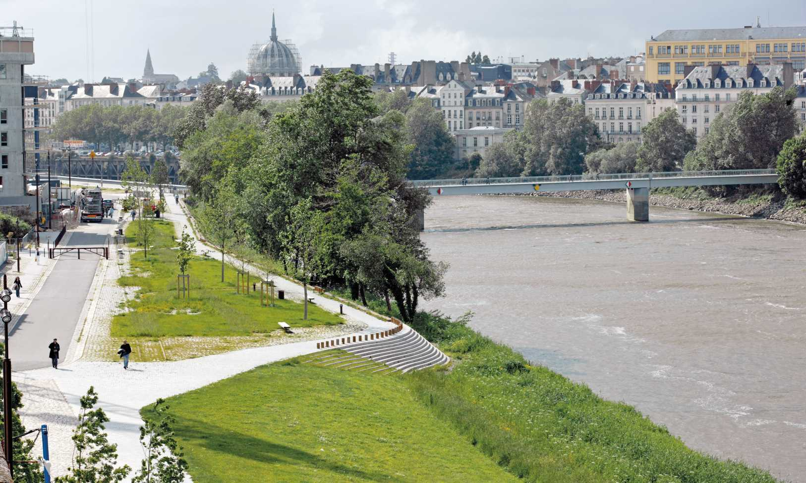

Survolez l'image et agrandissez/réduisez la vue à l'aide de la molette.
Budget: 5 205 000 € HT
Surface: 54 3000 m²
Date début: 2002
Date fin: 2005
Maîtrise d'ouvrage: Nantes Métropole
Co-traitant(s): Bureau des paysages, Bureau Technique du Poitou structure
Description:
À partir du nivellement naturel du territoire, et dans l’idée de considérer les berges comme lieu de promenade, ce projet d’aménagement offre une succession de situations qui dialoguent avec la Loire. Une première estacade en béton, réalisée dans les années 1920, est réaménagée, renforcée et décaissée du terrain. Une autre estacade plus basse permet une variation tout en assurant la continuité du parcours de la promenade, jusqu’au pont transbordeur qui s’insinue sous le pont Anne de Bretagne. Ce jeu de niveau se ressent également en coupe, du trottoir vers les ouvrages qui accèdent au fleuve.
Les travaux de terrassement et de nivellement du terrain permettent de vérifier les propriétés du lieu. L’expertise agropédologique vet une opération de triage donnent la possibilité de sélectionner les matériaux réutilisables (sable amendé pour les fondations) et de reconstituer des sols fertiles. Le sol est réalisé par la mise en œuvre de pavés de granit, récupérés dans certaines rues et sur les quais, et complété par la dépose de l’enrobé superficiel par un procédé d’hydrodécapage.
Le produit de rabotage de cet enrobé, le fraisa, est réutilisé en fondation d’allées piétonnes. Le remblaiement de sable et la présence de la nappe phréatique permettent d’envisager une culture d’essences variées, caractéristique de ce paysage particulièrement riche.
{kind=link}
{kind=link}
{kind=link}
{kind=link}